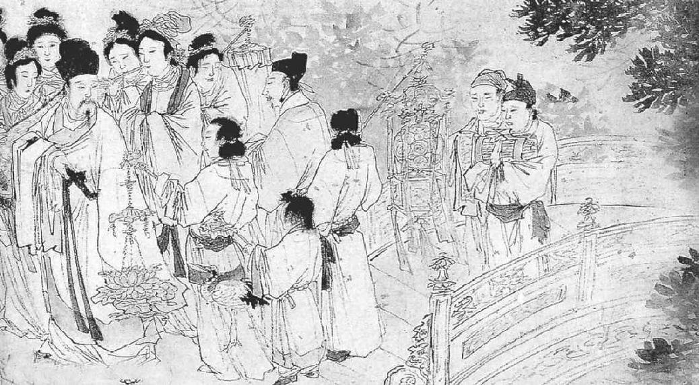

第十九章 太后恩宠
苏东坡总是得到历朝皇后的荫庇。在他受审时，是仁宗的皇后救了他的命。现在又是英宗皇后拔擢他得势，甚至在他一生中较晚的岁月里，若不是神宗的皇后代摄政事，他就客死蛮荒了。
新皇帝现今才九岁，摄政的是他的祖母。宋朝特别幸运，能接连有贤德的皇后出现。在伟大的汉唐两代，几个皇帝的后妃不是僭取帝位，借有权势的太监或内戚擅权统治，就是在别的情形之下弄得朝代覆亡。在苏东坡时代，四个皇后当政，都极贤德，并且有的十分出色。也许她们是女人，所以能明辨是非，在朝中能判别善恶。因为她们生长在宫廷之中，并不能常听到儒臣们论辩国家的政策，听得繁乱到得失难分、莫知所从的地步，但是所闻所见，正足以判别清议所趋的主要方向。现代普选的民主制度就是根据一般常人的判断，这些人连《纽约时报》的社论还看不懂。皇太后的判断也就是一般常人的判断。神宗皇帝最后那些年，已经开始简化政令，但仍不到他母亲老太后这般清净无为的地步。皇帝一去世，太后即召司马光当政，立刻将政令改弦更张。王安石的一切政令全予中止，或径予废除。元祐年间这一段开始了。
苏东坡现在急剧得势，在他到达京都八个月之内，朝廷将他擢升三次。依据古制，官位分为九级。在此短短一段期间，他由第七级上升，经过第六级，跳到第四级，最后止于第三级翰林，为皇帝草拟诏书，那时他正是四十九岁。
在苏东坡升任翰林之前，在哲宗元祐元年（一〇八六年），他官居四品中书舍人，实为一重要职位，因他参与朝廷各部官员的挑选与任用。担任此一职务时，他草拟了几次圣旨，颇为有趣，内容与他颇有关系。一道圣旨是褫夺李定的官职，命他将过去隐瞒未报的母丧三年重新依礼居丧。第二道圣旨是贬谪吕惠卿。内容的决定者不是苏东坡，但圣旨的措辞结构则出自他的手笔。在贬谪吕惠卿这个奸佞小人时，苏东坡说：“始与知己，共为欺君，喜则摩足以相欢，怒则反目以相噬。”“党与交攻，几半天下。”不过最有趣的事是四月王安石死后苏东坡必须草拟一道圣旨追赠荣衔。这道圣旨的措辞必须十分巧妙，寓贬于褒。依照法制，当以皇帝名义发布，赞美其生活与品格，并颁赠“太傅”荣衔。苏东坡只是赞美王安石富有巧思，同时使人知道正是指他的妄自尊大、欺人欺己。苏东坡说他“罔罗六艺之遗文，断以己意；糠秕百家之陈迹，作新斯人”。这篇圣旨很巧妙地发展下去，后来苏东坡说：“胡不百年，为之一涕。”读者不知道自己所读的到底是夸大的颂赞，还是反面的诽谤。
“翰林学士知制诰”一个职位永远是名气最高的学者担任，往往是担任首相的前一步。苏东坡这时已经接近顶点。在宋朝，翰林学士知制诰是三品，宰相是二品，在宋朝一品几乎没有颁赠过。再者，为皇帝草拟圣旨，就使苏东坡得以亲密接近儿童皇帝和太皇太后。这项任命是由宫廷亲自派人送到苏东坡家中的，同时颁赠官衣一件、金带一条、白马一匹，附有一套镀金的缰绳鞍鞯上的零配搭。宰相办公的中书省与皇宫西面相连，翰林院则靠近皇宫北门，算是皇宫中的一部分。翰林的工作通常都是在晚上。翰林在院中办事时，也是称为“锁禁深夜”。习惯上是，翰林单日夜里在宫院值班，草拟圣旨，在双日发布。在黄昏时，他顺宫中东墙进去，直到内东门，那儿为他留有一间屋子，接连太皇太后的住处。有时长夜漫漫，他无所事事，只有凝望红烛，静听宫漏，以遣永夜。有时夜间寒冷，太皇太后会差人送来热酒。关于要发布的诏令，都是由太皇太后口述，他再用极为典雅庄严之文体写出来，以备第二天颁布之用。
《苏轼回翰林院图》 中国画 张路 明
苏东坡被皇上召回后任命于翰林院。一夜，忽被太皇太后召见，向他解释原委，并重申对他的信任，而后太皇太后派人送苏轼回翰林院，并送他金莲灯为他照明。此图表现的正是这一情节。
在苏东坡任翰林学士知制诰期间，他拟了约有八百道圣旨，现在都收在他的全集中。无不铿锵有声，妥帖工巧，简练明确。圣旨的文字往往引经据史，富有例证譬喻，这类文字苏东坡写来轻而易举。苏东坡去世后，另一个人，姓洪，接他的职位。他对自己的文才颇自期许，他问当年侍候苏东坡的老仆，他比苏东坡如何？老仆回答说：“苏东坡写得并不见得比大人美，不过他永远不用查书。”
一天晚上，苏东坡正在此一小书斋中坐着，他对政客的嫉妒已是十分厌恶，已经请辞此一职务。太皇太后宣他进宫草拟诏命。年轻的皇帝正坐在祖母身旁。苏东坡在一旁毕恭毕敬地立着听记吩咐。在告诉苏东坡草拟圣旨任命吕大防为宰相之后，太皇太后突然问他：“有一件事我想问你。几年前你官居何职？”
“常州团练副使。”
“现在身居何职？”
“臣承乏翰林学士。”
“你为何升迁如此之快？”
“仰赖太皇太后的恩典。”
“这与老身无关。”
苏东坡只好瞎猜：“一定是皇上的恩典。”
“与皇上也无关。”
苏东坡又猜道：“也许是有老臣推荐。”
太后说：“与他们也没关系。”
苏东坡立着呆了片刻，然后说：“臣虽不肖，但从不运用关系求取官职。”
太后最后说：“这是我老早就想对你说的。这是神宗皇帝的遗诏。先王在世之时，每当用膳时举箸不下，臣仆们便知道是看你写的文字。他常说起你的天才，常想用你，但不幸未及如愿便遽尔崩逝。”
提到先王，三个人不觉一齐落泪。太后于是赐东坡座，赐茶叶一包，又对他说：“你要尽忠辅保幼主，以报先王之恩遇。”苏东坡要鞠躬退出时，太后从桌子上拿起一个刻有莲花的金烛台当礼品赏与东坡。
在苏东坡升任翰林学士不久，司马光在哲宗元祐元年（一〇八六年）九月逝世。那天正好是神宗灵位送入太庙的斋戒之日。灵柩停在灵堂，司马光的朋友本当前去拜祭，并且吊丧者应当哭几声。但是偏巧全体官员都要遵礼去斋戒，反倒没有时间去向去世的宰相吊祭。九月初六，依照古礼在盛大肃穆乐声悠扬的典礼中，将神宗的灵位安置在太庙里。朝廷举行大赦，罢朝三日。文武百官都参与大典，但是一件有趣而重大的事发生了。事有凑巧，司马光的丧礼由理学大师程颢的弟弟程颐主办。这位理学家话往最轻里说，也不是个和蔼可亲的人，那副自命不凡的样子更使苏东坡烦恼。这位理学家完全遵古礼来办这件丧事。当时死者的亲人要站在灵柩之侧向灵前吊祭的客人还礼，这种风俗已流行数百年。但是程颐认为不合古礼，于是禁止司马光的儿子站在灵柩一旁还礼接待客人。他的理由是，孝子如果真孝，应当是悲痛得不能见客人才是。那天朝廷百官在太庙中的大典完毕之后，苏东坡正要带领翰林院及中书省同人前往故相国司马光府去吊祭，程颐也有事要去，他就向大家说这违背孔子在《论语》中的话：“子于是日哭，则不歌。”因为那天早晨大家曾在太庙唱过歌，至少听过奏乐，怎么同一天还能去吊丧哭泣呢？大家到了司马府门前，小程想拦阻大家，于是大家争得面红耳赤。
程颐说：“你们没念过《论语》吗？‘子于是日哭，则不歌。’”
苏东坡立刻回答道：“《论语》上并没说‘子于是日歌，则不哭’。”
苏东坡十分气恼，不顾程颐的反对，率领大家进了门。每个人都站在灵柩前面行礼，在离去之前都依照习俗以袖拭目。苏东坡一看司马光的儿子没出来接待客人，问过别人，才知道程颐禁止，说是于古无征。于是苏东坡在全体官员之前说道：“伊川可谓燠糟鄙俚叔孙通。”大家哄堂大笑，程颐满面通红。这句评语极为恰当，可谓一针见血，入木三分。不论程颐或苏东坡自己，对这句挖苦话，都是毕生难忘。谁也不愿一生背着这个标签。在苏东坡和小程这一派之间，这粒仇恨的种子算播下了。
不久，他们看见皇帝和太皇太后的龙车凤辇来了，都是朱红的轮子。他们是来吊唁故相国的，并在灵前哭泣，以尽君臣之礼。司马光之丧是国家赋予大臣当得的最高荣耀。他在棺木中的遗体上都盖以水银龙脑，是皇家的赏赐。皇家又赐白银三千两、绸缎四千匹，又派宫廷官员二人护卫灵柩还乡，家中十人赐予官职。
次年，苏东坡除去翰林学士之外，皇帝又于七月畀以侍读之职。皇帝如今只是一个孩子，不过即便皇帝是中年人，为了对皇帝有益处，仍然是在每单日要给皇帝讲课。计分两学期，春季期自二月到五月节；冬季期从中秋节到冬至。大臣中以学识渊博出名者，轮流为皇上讲解经史及为政之道，以过去历史上的得失为殷鉴。早朝之后，膺选的官员便由文德殿出发，顺着西面走廊到迩英殿。在苏东坡时代，讲学的人站立，其他旁听的官员则可坐着听。王安石充任讲席时，他想让讲师坐下而旁听的官员站立，但因有一个官员反对，此议作罢。在这期间，浮夸傲慢的理学家程颐因精研经典也参与讲学，但是他所列之等级为低级之侍讲。但是他也请求坐着讲学，如此合乎儒家尊师的道理。他向年轻皇帝哲宗谆谆告诫，要提防恶魅的力量与女人的诱惑力。当时皇帝尚未成年，还感觉不到女人的吸引力，但是他偏偏决定将来成年后要欢乐一番。这位年轻皇帝后来废了他的皇后，二十四岁时驾崩。
就苏东坡的家庭而论，住在京都确是大有益处。苏东坡卖了那栋老房子之后，而今的住宅是在白家巷。即使以前没把那栋老房子卖掉，若住着那儿，也离官衙太远。新住宅离东华门很近，黎明之时，文武百官从此门进宫早朝。所以此一地区就是官员喜爱的住宅区，也就是现在我们所说的城中区，最贵的商店和饭馆子都开在那里。
苏家全家现在开始享受京都的生活，和黄州的农家生活大不同了。他们差不多十五年没住在京都，只有苏东坡在京都监狱的那四个月来过，另外是他不能进城住在城外郊区的那一次。孝顺的儿子迈，他已经到江西去做一小官，现在不知回来团聚没有。但是两个小儿子——迨和过，一个十六，一个十四，是在家中。苏夫人和朝云现在都能安享快乐的生活，不过看着京都生活的奢华，有点儿害怕。住家的四周都是珠宝店、绸缎店、药铺，两三层堂皇闳壮的高楼。
中国所能产的百物的精华都陈列在东华门一带，价钱会令一个乡下女人吓一跳。不管东西卖得多贵，像背乎节令的鲜花、水果，总是有人愿意买。有一件事很方便，就是从佣工介绍所雇用仆人。附近处处是酒馆、饭馆。晚上，一进入酒馆，歌妓在走廊下站一排，等候顾客招唤去侑酒。男孩子随同父亲进去时，眼睛得向前直看，不然就得一直望着地。吃饭时，小贩和求施舍的人按房间去串，卖糖果、干果、卤肉、腌菜等物。在饭馆，据说有四五十种菜，由跑堂的带着在各屋里串，由顾客选合口味的买。那菜单子上的菜若是有的短缺，饭馆就会丧失顾客。
苏东坡喜欢在家里宴客，饭馆都争着做外会生意。这些做外会生意的馆子，都用银制的餐具。即便穷馆子也派得出一个厨子和全套的银酒壶、酒杯、碟子、汤匙，以及银头儿的象牙筷子。当时的风俗是，一家叫了几次外会之后，那些饭馆子照例把那些值四五百两的银餐具放在顾客家过夜，第二天再去收，并不以为有什么重要。等后来汴梁陷入金人之手，当时有一个作家以无限留恋的笔调记载京都，说当地的老百姓都颇以此京都为荣，并且他们对外地人十分大方慷慨。有时看见外省人被奸诈人欺负，他们会打抱不平前去帮助，甚至不惜与地方警官冲突。若有新住户迁入，邻居会带着酒茶等物去拜访，告诉他本地商店的情形，以免上当。也有人终日无所事事，只带着茶壶到每家去串门子闲谈。在这种气氛的生活里，苏东坡还是照常练他的瑜伽和养生之道。每隔一夜，他就要睡在宫中。但是不论在宫中或在家中，他总是黎明即起，梳头发一百次，穿上官衣官靴，然后再躺下小睡。他说，那种小睡之美，无物可比。等该出门上朝时，他已衣冠齐整，于是出门骑上镀金鞍鞯的白马，往东华门而去。
早朝最迟十点钟完毕，这时，除非有特别公务，他照例可以自由了。他若没有交往应酬，就带着妻子孩子去逛商店买东西。相国寺只在附近，院内挤满了卖扇子、刀剪、珍品、古物、字画、拓片等东西的商贩。有时，全家在东城的商场去逛，可以理发、买盆花、买鸟买笼子，一天的工夫在不知不觉中混过去。有时穿过朱雀门到外城去，那儿还有一大片住宅区，孔庙和国子监都在南外城，再往远处就是各式各样的道士观。他们倦游归来，有时在“台楼”吃饭，那是汴梁最好的酒馆。或是走南门街，去逛著名的唐家珠宝店，挑选几件温州的漆器，或是在报慈寺街的药铺买点儿上好的草药。
事实上，在奢侈豪华的生活和简单朴质的生活之间，论幸福，并没有多大不同。高职显位的荣耀，只有在没有那种能力资格的人眼里，才值得羡慕。一般的道理是，在人不需要一个职位时，人家才找他去担任，人要求取某职位时，那个职位往往不需要他。一旦官瘾过足之后，做高官的快乐不见得比做个成功的铁匠的快乐大。苏东坡在论“乐与苦”的一篇短文里，即表示此种看法：
乐事可慕，苦事可畏，此是未至时心耳。及苦乐既至，以身履之，求畏慕者初不可得。况既过之后，复有何物比之？寻声捕影，系风趁梦，此四者犹有彷彿也。如此推究，不免是病，且以此病对治彼病，彼此相磨，安得乐处。当以至理语君，今则不可。
元祐三年八月五日书
还有人把京都的生活持一种很世俗的看法。他的朋友蒲宗孟就极尽奢侈享乐的能事。蒲家的儿媳终日不做别的，只教丫鬟做各式图样的“酥花”，加糖凝结，以备做饭后小吃之用。他一个儿媳妇不许以同样的“酥花”叫客人第二次再吃到，而丫鬟们昼夜忙着做那些“酥花”。蒲宗孟有些特别的习惯，其中包括“大洗面”“小洗面”“大濯足”“小濯足”“大澡浴”“小澡浴”。他每天洗脸两次，洗脚两次，每隔一天正式洗澡一次。在“小洗面”时，他只洗脸，脸盆中换水一次，由两个仆人侍奉；“大洗面”时，要换水三次，由五个仆人侍奉，要洗到脖子和肩膀。在“小濯足”时，换水一次，由两个仆人侍奉，只洗到足踝为止；在“大濯足”时，换水三次，由四个仆人侍奉，要洗到膝盖。在“小澡浴”时，他用三水，由五六个仆人侍奉；在“大澡浴”时，也用三斛水，但由八九个仆人侍奉。在“大澡浴”时，他用药膏洗，衣裳要放在金属网子上，下有稀奇的香料点燃慢熏。他写信给苏东坡说，此种洗澡法对他益处甚大。苏东坡回答说：“闻所得甚高，固以为慰，然复有二，尚欲奉劝，一曰俭，二曰慈。”
做高官在社交和物质上还有绝无可疑的好处。在那种年月，读书人只有两条路可选择，一是做官，一是隐姓埋名，也就是甘于贫贱。人做学问可以得千秋万岁名。但对很多人而言，不朽的盛名，即便可以得到，也无以搪饥寒。在苏东坡时，有个笑话挖苦科考得意做了官，却自称是为国牺牲的人：
从前有一个读书人，穷得没钱买馒头。因为饥得慌，想出一个办法吃馒头。他走到一个馒头店外头，突然大惊而逃，但是没人理会。他到另一家馒头店，门口有一大群人。他看见馒头，大喊一声，做大惊状，拔腿就跑，跑不远，跌倒地上。一大群人围过来，问他怕什么。读书人说：“怕那些馒头！”人都大笑，从来没听说此等事。馒头店老板不相信，想试试他。他把读书人引进放有好多馒头的一间屋子，暗中从门上的锁眼里往内看。读书人一看妙计成功，大喜，两手抱着馒头狼吞虎咽。老板颇受感动，推开门很客气地问他：“你还怕什么？”读书人说：“我还怕一杯好热茶。”
一天，韩维——他属于一个曾出过几个宰相的富贵之家——有两个女婿去拜谒苏东坡。东坡问他们的岳父近况如何。
一个青年人回答说：“他老人家近况很好。他告诉我们说，他已到老年，他要以声色美酒自娱，否则不知道何以度日。”
苏东坡说：“我想他做错了，正因为他只剩有晚年。我告诉你们一个故事，回去告诉令岳丈听。”
年轻人说：“是，当然。”
苏东坡说出下列的故事：
顷有一老人，未尝参禅，而雅合禅理，死生之际，极为了然。一日，置酒大会亲友，酒阑，语众曰：“老人即今且去。”因摄衣正坐，将奄奄焉。诸子乃惶遽呼号曰：“大人今日乃与世诀乎？愿留一言为教。”老人曰：“本欲无言，今为汝恳，只且第一五更起。”诸子未喻，曰：“何也？”老人曰：“唯五更可以勾当自家事，日出之后，欲勾当则不可矣。”诸子曰：“家中幸丰，何用早起，举家诸事，皆是自家事也，岂有分别？”老人曰：“不然，所谓自家事者，是死时将得去者。吾平生治生，今日就化，可将何者去？”诸子颇悟。
苏东坡接着说：“令岳丈以为馀年无多，所以想尽量享乐。你们俩给我带个话儿去好不好？说我要他只注意他自己的事，不要把日渐消弱的精力费在醇酒妇人上。他最好想想，到了人生旅程的末端他能带什么走。”
在他敬重的朋友范镇死后，苏东坡说：“范景仁平生不好佛，晚年清慎，减节嗜欲，一物不芥蒂于心，真却是学佛作家，然至死常不取佛法。某谓景仁虽不学佛而达佛理，虽毁佛骂祖，亦不害也。”
苏东坡现在名气之盛，达于极点。他受所有的文人、朋友崇敬，在朝廷上又官居高位。他为坚持己见，饱受其苦，因此也更为人所佩服，在这方面，朋友辈都望尘莫及。司马光死后，当代学者之中，无人能望其项背，虽然他并不十分适于宰相之位，但大家公认，以人品论，在整个官场之中，他是巍然高出于众人之上的。有一度他的两个朋友居朝廷最高的官位，一是吕公著，一是范纯仁。他弟弟子由在哲宗元祐元年也已回到京师，任御史中丞，次年升为尚书右丞。所有当年贬谪到南方的朋友现在都回朝官居要津，包括驸马王诜、王巩、孙觉、范祖禹。他在黄州的老友陈慥也到了京都，不是来做官，而是来看苏东坡，享受友人欢聚之乐。大诗人黄庭坚原已与苏东坡通信有年，现也来京相交往，并正式拜在他门下。有数年期间，苏东坡在通信中，屡次赞美他的“苏门四学士”，因此大为提高了四人的名气。这时“苏门四学士”已是尽人皆知，他们就是黄庭坚、秦观、张耒、晁补之。后来，又增加两个，一是李廌，一是陈师道，共为“苏门六学士”。
苏东坡之深孚众望，却破坏了一门婚事。原来学者章元弼对苏东坡素极崇拜。他本人长得并无足观，却娶妻甚美。婚后，妻子发现丈夫整夜读苏东坡的诗，对妻子不甚理睬。后来妻子终于不能忍受，对丈夫说：“那么你爱苏东坡胜过了我！好吧，把我休了。”丈夫便把她休了。这位丈夫章元弼告诉友人说他妻子遗弃他，全是为了苏东坡。
这时苏东坡之受人欢迎，竟致好多文人模仿苏东坡的帽子。苏东坡戴一个特别高的帽子，顶上窄而微向前倾，这样的帽子后来叫“子瞻帽”。一天，他陪圣驾到醴泉游玩，当地正由宫中的伶工演戏。一个丑角儿头戴“子瞻帽”在戏台上自夸道：“我这个作家诸位比不了！”别的伶工说：“怎见得？”丑角儿说：“难道你们看不见我戴的帽子？”这时皇上微微一笑，向苏东坡看了一眼。
在这种情形之下，苏东坡和朋友们则恣情笑谑。在他官居礼部尚书又兼主考官时，他和几个考官朋友入闱几十天。在办公时间都忙着阅卷，苏东坡则不停地在各屋里转，闲谈笑谑，简直教人无法专心做事。到了夜晚，他才自己做事，看试卷，评等级，迅速之至。有好多逸闻，说他如何当场捏造笑话。那些笑话里包括双关语，尤其是他和另一个富有机智的才子刘邠说话的机锋相对。有些笑话是可以译成英文的。
有一次，苏东坡去拜访宰相吕大防，吕极胖，苏东坡到时，他正在午睡。苏东坡等了好久，非常烦恼。最后吕大防出来了，苏东坡手指向客厅中一个大瓦缸里背长绿苔的乌龟。
他向主人说：“这种东西没有什么稀奇，难得的是一种三对眼睛的乌龟。”
吕大防眼睛瞪得圆圆地说：“是吗？会有六个眼睛的乌龟？”吕大防心想不对，自己一定被捉弄了，但是苏东坡学问如此渊博，定在什么书上读到过。
苏东坡回答说：“当然，在后唐庄宗时，有一个大臣向皇帝进献一只乌龟。皇帝问他六个眼睛的乌龟有什么好处。大臣说六个眼睛的乌龟有三对眼，普通乌龟只有一对。所以，你看，六眼乌龟午睡时，他要睡三个普通乌龟的觉呢。”
苏东坡常向朋友钱勰得意扬扬地夸大，说他多么喜爱他在乡间过的那种简朴生活。他说吃饭时只有米饭、萝卜、一个清淡的汤，可是他十分快乐满足。一天，钱勰送给他一个请帖，请他吃饭。请帖上说：“将以‘皛饭’待客。”苏东坡从来没听过那种东西，不知“皛饭”为何物。那天他一到，只见钱勰为他准备的只是很简单的一餐，只有三件白东西摆在桌子上：一碗白米饭，一盘白萝卜，还有一碗无色的汤。苏东坡忽然想起自己的夸大，知道是受人愚弄了。苏东坡等过了一些日子，送给钱勰一张请帖，请吃“毳餐”。钱勰去赴席，发现桌子上一无所有。苏东坡请他坐下，两人都坐下。过了好久，还没有菜上来，钱勰抱怨说饿了。苏东坡大言不惭地说：“咱们开始吃吧，不用等了，快吃‘毳餐’吧。‘毳餐’就是毛米饭、毛萝卜、毛菜汤”（“毛”读作“没”）。苏东坡这样报复之后，也宽恕了那个朋友，二人开怀吃了一顿盛餐。
做翰林学士时，苏东坡常在夜里深锁宫中。有一个极为崇拜苏东坡的，勤于搜求苏东坡的字，苏东坡每一个短简便条若由苏东坡的秘书交给他，他就给秘书十斤羊肉。东坡已经风闻此事。一天，秘书请苏东坡回复友人的口信，东坡口头回复了。秘书第二次又来请求，苏东坡说：“我不是已经告诉你了吗？”
秘书说：“那人一定要一个书面的答复。”
苏东坡说：“告诉你那位朋友，今天禁屠。”
《论语》里有个司马牛，是孔子的弟子，与司马光同姓。一天，苏东坡为国事和司马光争吵得很厉害，而司马光仍是坚持己见。苏东坡回到家，把长袍扔在躺椅上，向朝云叹了口气说：“司马牛！司马牛！”
这几年，苏东坡在他的政论文字里，时常申论“慎思”与“公正”二义为贤臣之所必备。但是慎思与公正实为党人之所憎恶。一天，一顿丰盛的晚餐之后，苏东坡在屋里欣然扪腹而行。他问家中女人他那便便大腹之中何所有。在中文里是惯于说“一肚子学问”。一个女人说是“一肚子墨水”，一个女人说：“你是一肚子漂亮诗文。”苏东坡都摇头说“不是”。最后，聪明的侍妾朝云说：“你是一肚子不合时宜。”东坡大呼曰：“对！”遂大笑。一次，一个素不相识的文人去拜访苏东坡，携带他写的诗一卷，请苏东坡指教。那个可怜的文人自己高声朗诵，抑扬顿挫，铿锵有声，显然是颇为自得。他问：“大人，不知尊见以拙作为如何？”
苏东坡说：“十分。”
那个文人脸上欣然色喜。苏东坡这时又说：“诵读之美七分，诗句之美三分。”